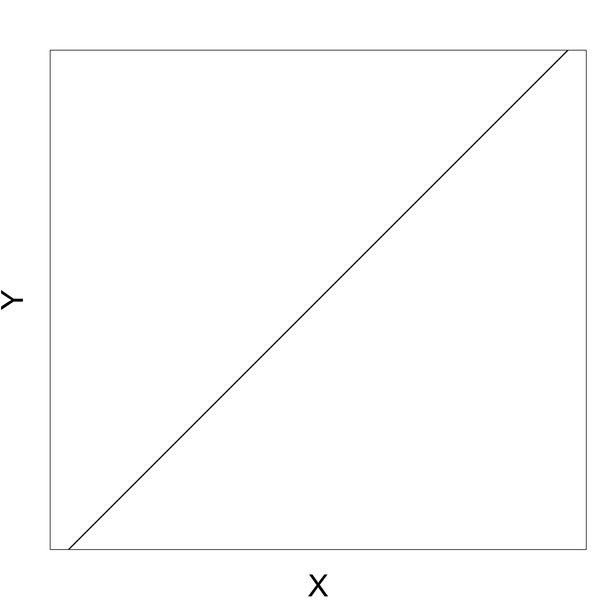

Statistical Models
Lecture 1
Lecture 1:
An introduction to Statistics
Outline of Lecture 1
- Module info
- Introduction
- Probability revision
- Moment generating functions
Part 1:
Module info
Contact details
- Lecturer: Dr. Silvio Fanzon
- Call me:
- Silvio
- Dr. Fanzon
- Email: S.Fanzon@hull.ac.uk
- Office: Room 104a, Larkin Building
- Office hours: Wednesday 12:00-13:00
- Meetings: in my office or send me an Email
Questions
If you have any questions please feel free to
email meWe will address
HomeworkandCourseworkin classIn addition, please do not hesitate to attend
office hours
Lectures
Each week we have
- 2 Lectures of 2h each
- 1 Tutorial of 1h
| Session | Date | Place |
|---|---|---|
| Lecture 1 | Wed 10:00-12:00 | Wilberforce LR 22 |
| Lecture 2 | Thu 15:00-17:00 | Wilberforce LR 10 |
| Tutorial | Thu 11:00-12:00 | Wilberforce LR 7 |
Assessment
This course will be assessed as follows:
| Type of Assessment | Percentage of final grade |
|---|---|
| Coursework Portfolio | 70% |
| Homework | 30% |
Rules for Coursework
Coursework available on Canvas from Week 3
We will discuss coursework exercises in class
Coursework must be submitted on Canvas
Deadline: 14:00 on Thursday 2nd May
Rules for Homework
Key submission dates
| Assignment | Due date |
|---|---|
| Homework 1 | 5 Feb |
| Homework 2 | 12 Feb |
| Homework 3 | 19 Feb |
| Homework 4 | 26 Feb |
| Homework 5 | 4 Mar |
| Homework 6 | 11 Mar |
| Assignment | Due date |
|---|---|
| Homework 7 | 18 Mar |
| Easter Break | 😎 |
| Homework 8 | 8 Apr |
| Homework 9 | 15 Apr |
| Homework 10 | 22 Apr |
| Coursework | 2 May |
How to submit assignments
Submit PDFs only on Canvas
You have two options:
- Write on tablet and submit PDF Output
- Write on paper and Scan in Black and White using a Scanner or Scanner App (Tiny Scanner, Scanner Pro, …)
Important: I will not mark
- Assignments submitted outside of Canvas
- Assignments submitted After the Deadline
References
Main textbooks
Slides are self-contained and based on the book
- [1] Bingham, N. H. and Fry, J. M.
Regression: Linear models in statistics.
Springer, 2010

References
Main textbooks
.. and also on the book
- [2] Fry, J. M. and Burke, M.
Quantitative methods in finance using R.
Open University Press, 2022

References
Secondary References
Probability & Statistics manual
Easier Probability & Statistics manual
References
Secondary References
Concise Statistics with R
Comprehensive R manual
Part 2:
Introduction
The nature of Statistics
Statistics is a mathematical subject
Maths skills will give you a head start
There are other occasions where common sense and detective skills can be more important
Provides an early example of mathematics working in concert with the available computation
The nature of Statistics
We will use a combination of hand calculation and software
- Recognises that you are maths students
- Software (R) is really useful, particularly for dissertations
- Please bring your laptop into class
- Download R onto your laptop
Overview of the module
Module has 11 Lectures, divided into two parts:
Part I - Mathematical statistics
Part II - Applied statistics
Overview of the module
Part I - Mathematical statistics
- Introduction to statistics
- Normal distribution family and one-sample hypothesis tests
- Two-sample hypothesis tests
- The chi-squared test
- Non-parametric statistics
- The maths of regression
Overview of the module
Part II - Applied statistics
- An introduction to practical regression
- The extra sum of squares principle and regression modelling assumptions
- Violations of regression assumptions – Autocorrelation
- Violation of regression assumptions – Multicollinearity
- Dummy variable regression models
Simple but useful questions
Generic data:
- What is a typical observation
- What is the mean?
- How spread out is the data?
- What is the variance?
Regression:
- What happens to Y as X increases?
- increases?
- decreases?
- nothing?
Statistics answers these questions systematically
- important for large datasets
- The same mathematical machinery (normal family of distributions) can be applied to both questions
Analysing a general dataset
Two basic questions:
- Location or mean
- Spread or variance
Statistics enables to answer systematically:
- One sample and two-sample t-test
- Chi-squared test and F-test
Recall the following sketch

Curve represents data distribution
Motivating regression
Basic question in regression:
What happens to Y as X increases?
- increases?
- decreases?
- nothing?
In this way regression can be seen as a more advanced version of high-school maths
Positive gradient
As X increases Y increases
Negative gradient
As X increases Y decreases

Zero gradient
Changes in X do not affect Y
Real data example
- Real data is more imperfect
- But the same basic idea applies
- Example:
- X = Stock price
- Y = Gold price
Real data example
How does real data look like?
Dataset with 33 entries for Stock and Gold price pairs
|
|
|
Real data example
Visualizing the data
Plot Stock Price against Gold Price
Observation:
- As Stock price decreases, Gold price increases
Why? This might be because:
- Stock price decreases
- People invest in secure assets (Gold)
- Gold demand increases
- Gold price increases
Don’t panic
- Regression problems can look a lot harder than they really are
- Basic question remains the same: what happens to Y as X increases?
- Beware of jargon. Various authors distinguish between
- Two variable regression model
- Multiple regression model
- Analysis of Variance
- Analysis of Covariance
- Despite these apparent differences:
- Mathematical methodology stays (essentially) the same
- regression-fitting commands in R stay (essentially) the same
Part 3:
Probability revision
Probability revision
- We start with reviewing some fundamental Probability notions
- You saw these in the Y1 module Introduction to Probability & Statistics
- We will adopt a slightly more mature mathematical approach
- Remember: The mathematical description might look (a bit) different, but the concepts are the same
Topics reviewed:
- Sample space
- Events
- Probability measure
- Conditional probability
- Events independence
- Random Variable
- Distribution
- cdf
- pmf
Sample space
Definition: Sample space
A set \Omega of all possible outcomes of some experiment
Examples:
Coin toss: results in Heads = H and Tails = T \Omega = \{ H, T \}
Student grade for Statistical Models: a number between 0 and 100 \Omega = \{ x \in \mathbb{R} \, \colon \, 0 \leq x \leq 100 \} = [0,100]
Events
Definition: Event
A subset E of the sample space \Omega (including \emptyset and \Omega itself)
Operations with events:
Union of two events A and B A \cup B := \{ x \in \Omega \colon x \in A \, \text{ or } \, x \in B \}
Intersection of two events A and B A \cap B := \{ x \in \Omega \colon x \in A \, \text{ and } \, x \in B \}
Events
More Operations with events:
Complement of an event A A^c := \{ x \in \Omega \colon x \notin A \}
Infinite Union of a family of events A_i with i \in I
\bigcup_{i \in I} A_i := \{ x \in \Omega \colon x \in A_i \, \text{ for some } \, i \in I \}
- Infinite Intersection of a family of events A_i with i \in I
\bigcap_{i \in I} A_i := \{ x \in \Omega \colon x \in A_i \, \text{ for all } \, i \in I \}
Events
Example: Consider sample space and events \Omega := (0,1] \,, \quad A_i = \left[\frac{1}{i} , 1 \right] \,, \quad i \in \mathbb{N} Then \bigcup_{i \in I} A_i = (0,1] \,, \quad \bigcap_{i \in I} A_i = \{ 1 \}
Events
Definition: Disjoint
Two events A and B are disjoint if
A \cap B = \emptyset
Events A_1, A_2, \ldots are pairwise disjoint if
A_i \cap A_j = \emptyset \,, \quad \forall \, i \neq j
Events
Definition: Partition
The collection of events A_1, A_2, \ldots is a partition of \Omega if
- A_1, A_2, \ldots are pairwise disjoint
- \Omega = \cup_{i=1}^\infty A_i
What’s a Probability?
To each event E \subset \Omega we would like to associate a number P(E) \in [0,1]
The number P(E) is called the probability of E
The number P(E) models the frequency of occurrence of E:
- P(E) small means E has low chance of occurring
- P(E) large means E has high chance of occurring
Technical issue:
- One cannot associate a number P(E) for all events in \Omega
- Probability function P only defined for a smaller family of events
- Such family of events is called \sigma-algebra
\sigma-algebras
Definition: sigma-algebra
Let \mathcal{B} be a collection of events. We say that \mathcal{B} is a \sigma-algebra if
- \emptyset \in \mathcal{B}
- If A \in \mathcal{B} then A^c \in \mathcal{B}
- If A_1,A_2 , \ldots \in \mathcal{B} then \cup_{i=1}^\infty A_i \in \mathcal{B}
Remarks:
Since \emptyset \in \mathcal{B} and \emptyset^c = \Omega, we deduce that \Omega \in \mathcal{B}
Thanks to DeMorgan’s Law we have that A_1,A_2 , \ldots \in \mathcal{B} \quad \implies \quad \cap_{i=1}^\infty A_i \in \mathcal{B}
\sigma-algebras
Examples
Suppose \Omega is any set:
Then \mathcal{B} = \{ \emptyset, \Omega \} is a \sigma-algebra
The power set of \Omega \mathcal{B} = \operatorname{Power} (\Omega) := \{ A \colon A \subset \Omega \} is a \sigma-algebra
\sigma-algebras
Examples
If \Omega has n elements then \mathcal{B} = \operatorname{Power} (\Omega) contains 2^n sets
If \Omega = \{ 1,2,3\} then \begin{align*} \mathcal{B} = \operatorname{Power} (\Omega) = \big\{ & \{1\} , \, \{2\}, \, \{3\} \\ & \{1,2\} , \, \{2,3\}, \, \{1,3\} \\ & \emptyset , \{1,2,3\} \big\} \end{align*}
If \Omega is uncountable then the power set of \Omega is not easy to describe
Lebesgue \sigma-algebra
Question
\mathbb{R} is uncountable. Which \sigma-algebra do we consider?
Definition: Lebesgue sigma-algebra
The Lebesgue \sigma-algebra on \mathbb{R} is the smallest \sigma-algebra \mathcal{L} containing all sets of the form
(a,b) \,, \quad (a,b] \,, \quad [a,b) \,, \quad [a,b]
for all a,b \in \mathbb{R}
Lebesgue \sigma-algebra
Important
Therefore the events of \mathbb{R} are
- Intervals
- Unions and intersection of intervals
- Countable Unions and intersection of intervals
Warning
- I only told you that the Lebsesgue \sigma-algebra \mathcal{L} exists
- Explicitly showing that \mathcal{L} exists is not easy, see [7]
Probability measure
Suppose given:
- \Omega sample space
- \mathcal{B} a \sigma-algebra on \Omega
Definition: Probability measure
A probability measure on \Omega is a map P \colon \mathcal{B} \to [0,1] such that the Axioms of Probability hold
- P(\Omega) = 1
- If A_1, A_2,\ldots are pairwise disjoint then P\left( \bigcup_{i=1}^\infty A_i \right) = \sum_{i=1}^\infty P(A_i)
Properties of Probability
Let A, B \in \mathcal{B}. As a consequence of the Axioms of Probability:
- P(\emptyset) = 0
- If A and B are disjoint then P(A \cup B) = P(A) + P(B)
- P(A^c) = 1 - P(A)
- P(A) = P(A \cap B) + P(A \cap B^c)
- P(A\cup B) = P(A) + P(B) - P(A \cap B)
- If A \subset B then P(A) \leq P(B)
Properties of Probability
- Suppose A is an event and B_1,B_2, \ldots a partition of \Omega. Then P(A) = \sum_{i=1}^\infty P(A \cap B_i)
- Suppose A_1,A_2, \ldots are events. Then P\left( \bigcup_{i=1}^\infty A_i \right) \leq \sum_{i=1}^\infty P(A_i)
Example: Fair Coin Toss
The sample space for coin toss is \Omega = \{ H, T \}
We take as \sigma-algebra the power set of \Omega \mathcal{B} = \{ \emptyset , \, \{H\} , \, \{T\} , \, \{H,T\} \}
We suppose that the coin is fair
- This means P \colon \mathcal{B} \to [0,1] satisfies P(\{H\}) = P(\{T\})
- Assuming the above we get 1 = P(\Omega) = P(\{H\} \cup \{T\}) = P(\{H\}) + P(\{T\}) = 2 P(\{H\})
- Therefore P(\{H\}) = P(\{T\}) = \frac12
Conditional Probability
Definition: Conditional Probability
Let A,B be events in \Omega with
P(B)>0
The conditional probability of A given B is
P(A|B) := \frac{P(A \cap B)}{P(B)}
Conditional Probability
Intuition
The conditional probability P(A|B) = \frac{P( A \cap B)}{P(B)} represents the probability of A, knowing that B has happened:
- If B has happened, then B is the new sample space
- Therefore A \cap B^c cannot happen, and we are only interested in A \cap B
- Hence it makes sense to define P(A|B) \propto P(A \cap B)
- We divide P(A\cap B) by P(B) so that P(A|B) \in [0,1] is still a probability
- The function A \mapsto P(A|B) is a probability measure on \Omega
Bayes’ Rule
- For two events A and B is holds
P(A | B ) = P(B|A) \frac{P(A)}{P(B)}
- Given a partition A_1, A_2, \ldots of the sample space we have
P(A_i | B ) = \frac{ P(B|A_i) P(A_i)}{\sum_{j=1}^\infty P(B | A_j) P(A_j)}
Independence
Definition
Two events A and B are independent if
P(A \cap B) = P(A)P(B)
A collection of events A_1 , \ldots ,A_n are mutually independent if for any subcollection A_{i_1}, \ldots, A_{i_k} it holds
P \left( \bigcap_{j=1}^k A_j \right) = \prod_{j=1}^k P(A_{i_j})
Random Variables
Motivation
- Consider the experiment of flipping a coin 50 times
- The sample space consists of 2^{50} elements
- Elements are vectors of 50 entries recording the outcome H or T of each flip
- This is a very large sample space!
Suppose we are only interested in X = \text{ number of } \, H \, \text{ in } \, 50 \, \text{flips}
- Then the new sample space is the set of integers \{ 0,1,2,\ldots,50\}
- This is much smaller!
- X is called a Random Variable
Random Variables
Assume given
- \Omega sample space
- \mathcal{B} a \sigma-algebra of events on \Omega
- P \colon \mathcal{B} \to [0,1] a probability measure
Definition: Random variable
A function X \colon \Omega \to \mathbb{R}
We will abbreviate Random Variable with rv
Random Variables
Technical remark
Definition: Random variable
A measurable function X \colon \Omega \to \mathbb{R}
Technicality: X is a measurable function if \{ X \in I \} := \{ \omega \in \Omega \colon X(\omega) \in I \} \in \mathcal{B} \,, \quad \forall \, I \in \mathcal{L} where
- \mathcal{L} is the Lebsgue \sigma-algebra on \mathbb{R}
- \mathcal{B} is the given \sigma-algebra on \Omega
Random Variables
Notation
In particular I \in \mathcal{L} can be of the form (a,b) \,, \quad (a,b] \,, \quad [a,b) \,, \quad [a,b] \,, \quad \forall \, a, b \in \mathbb{R}
In this case the set \{X \in I\} \in \mathcal{B} is denoted by, respectively: \{ a < X < b \} \,, \quad \{ a < X \leq b \} \,, \quad \{ a \leq X < b \} \,, \quad \{ a \leq X \leq b \}
If a=b=x then I=[x,x]=\{x\}. Then we denote \{X \in I\} = \{X = x\}
Distribution
Why do we require measurability?
Answer: Because it allows to define a new probability measure on \mathbb{R}
Definition: Distribution
The distribution of a random variable X \colon \Omega \to \mathbb{R} is the probability measure on \mathbb{R}
P_X \colon \mathcal{L} \to [0,1] \,, \quad P_X (I) := P \left( \{X \in I\} \right) \,, \,\, \forall \, I \in \mathcal{L}
Note:
- One can show that P_X satisfies the Probability Axioms
- Thus P_X is a probability measure on \mathbb{R}
- In the future we will denote P \left( X \in I \right) := P \left( \{X \in I\} \right)
Distribution
Why is the distribution useful?
Answer: Because it allows to define a random variable X
- by specifying the distribution values P \left( X \in I \right)
- rather than defining an explicit function X \colon \Omega \to \mathbb{R}
Important: More often than not
- We care about the distribution of X
- We do not care about how X is defined
Example - Three coin tosses
- Sample space \Omega given by the below values of \omega
| \omega | HHH | HHT | HTH | THH | TTH | THT | HTT | TTT |
The probability of each outcome is the same P(\omega) = \frac{1}{2} \times \frac{1}{2} \times \frac{1}{2} = \frac{1}{8} \,, \quad \forall \, \omega \in \Omega
Define the random variable X \colon \Omega \to \mathbb{R} by X(\omega) := \text{ Number of H in } \omega
| \omega | HHH | HHT | HTH | THH | TTH | THT | HTT | TTT |
| X(\omega) | 3 | 2 | 2 | 2 | 1 | 1 | 1 | 0 |
Example - Three coin tosses
- Recall the definition of X
| \omega | HHH | HHT | HTH | THH | TTH | THT | HTT | TTT |
| X(\omega) | 3 | 2 | 2 | 2 | 1 | 1 | 1 | 0 |
The range of X is \{0,1,2,3\}
Hence the only interesting values of P_X are P(X=0) \,, \quad P(X=1) \,, \quad P(X=2) \,, \quad P(X=3)
Example - Three coin tosses
- Recall the definition of X
| \omega | HHH | HHT | HTH | THH | TTH | THT | HTT | TTT |
| X(\omega) | 3 | 2 | 2 | 2 | 1 | 1 | 1 | 0 |
- We compute \begin{align*} P(X=0) & = P(TTT) = \frac{1}{8} \\ P(X=1) & = P(TTH) + P(THT) + P(HTT) = \frac{3}{8} \\ P(X=2) & = P(HHT) + P(HTH) + P(THH) = \frac{3}{8} \\ P(X=3) & = P(HHH) = \frac{1}{8} \end{align*}
Example - Three coin tosses
- Recall the definition of X
| \omega | HHH | HHT | HTH | THH | TTH | THT | HTT | TTT |
| X(\omega) | 3 | 2 | 2 | 2 | 1 | 1 | 1 | 0 |
- The distribution of X is summarized in the table below
| x | 0 | 1 | 2 | 3 |
| P(X=x) | \frac{1}{8} | \frac{3}{8} | \frac{3}{8} | \frac{1}{8} |
Cumulative Distribution Function
Recall: The distribution of a rv X \colon \Omega \to \mathbb{R} is the probability measure on \mathbb{R} P_X \colon \mathcal{L} \to [0,1] \,, \quad P_X (I) := P \left( X \in I \right) \,, \,\, \forall \, I \in \mathcal{L}
Definition: cdf
The cumulative distribution function or cdf of a rv X \colon \Omega \to \mathbb{R} is
F_X \colon \mathbb{R} \to \mathbb{R} \,, \quad
F_X(x) := P_X (X \leq x)
Cumulative Distribution Function
Intuition
- F_X is the primitive of P_X:
- Recall from Analysis: The primitive of a continuous function g \colon \mathbb{R}\to \mathbb{R} is G(x):=\int_{-\infty}^x g(y) \,dy
- Note that P_X is not a function but a distribution
- However the definition of cdf as a primitive still makes sense
- P_X will be the derivative of F_X - In a suitable generalized sense
- Recall from Analysis: Fundamental Theorem of Calculus says G'(x)=g(x)
- Since F_X is the primitive of P_X, it will still hold F_X'=P_X in the sense of distributions
Distribution Function
Example
Consider again 3 coin tosses and the rv X(\omega) := \text{ Number of H in } \omega
We computed that the distribution P_X of X is
| x | 0 | 1 | 2 | 3 |
| P(X=x) | \frac{1}{8} | \frac{3}{8} | \frac{3}{8} | \frac{1}{8} |
- One can compute F_X(x) = \begin{cases} 0 & \text{if } x < 0 \\ \frac{1}{8} & \text{if } 0 \leq x < 1 \\ \frac{1}{2} & \text{if } 1 \leq x < 2 \\ \frac{7}{8} & \text{if } 2 \leq x < 3 \\ 1 & \text{if } 3 \leq x \end{cases}
- For example \begin{align*} F_X(2.1) & = P(X \leq 2.1) \\ & = P(X=0,1 \text{ or } 2) \\ & = P(X=0) + P(X=1) + P(X=2) \\ & = \frac{1}{8} + \frac{3}{8} + \frac{3}{8} = \frac{7}{8} \end{align*}
Cumulative Distribution Function
Example

- Plot of F_X: it is a step function
- F_X'=0 except at x=0,1,2,3
- F_X jumps at x=0,1,2,3
- Size of jump at x is P(X=x)
- F_X'=P_X in the sense of distributions
(Advanced analysis concept - not covered)
Discrete Random Variables
In the previous example:
- The cdf F_X had jumps
- Hence F_X was discountinuous
- We take this as definition of discrete rv
Definition
X \colon \Omega \to \mathbb{R} is discrete if F_X has jumps
Probability Mass Function
- In this slide X is a discrete rv
- Therefore F_X has jumps
Definition
The Probability Mass Function or pmf of a discrete rv X is
f_X \colon \mathbb{R} \to \mathbb{R} \,, \quad
f_X(x) := P(X = x)
Probability Mass Function
Properties
Proposition
The pmf f_X(x) = P(X=x) can be used to
- compute probabilities P(a \leq X \leq b) = \sum_{k = a}^b f_X (k) \,, \quad \forall \, a,b \in \mathbb{Z} \,, \,\, a \leq b
- compute the cdf F_X(x) = P(X \leq x) = \sum_{k=-\infty}^x f_X(k)
Example 1 - Discrete RV
Consider again 3 coin tosses and the RV X(\omega) := \text{ Number of H in } \omega
The pmf of X is f_X(x):=P(X=x), which we have already computed
| x | 0 | 1 | 2 | 3 |
| f_X(x)= P(X=x) | \frac{1}{8} | \frac{3}{8} | \frac{3}{8} | \frac{1}{8} |
Example 2 - Geometric Distribution
- Suppose p \in (0,1) is a given probability of success
- Hence 1-p is probability of failure
- Consider the random variable X = \text{ Number of attempts to obtain first success}
- Since each trial is independent, the pmf of X is f_X (x) = P(X=x) = (1-p)^{x-1} p \,, \quad \forall \, x \in \mathbb{N}
- This is called geometric distribution
Example 2 - Geometric Distribution
- We want to compute the cdf of X: For x \in \mathbb{N} with x > 0 \begin{align*} F_X(x) & = P(X \leq x) = \sum_{k=1}^x P(X=k) = \sum_{k=1}^x f_X(k) \\ & = \sum_{k=1}^x (1-p)^{k-1} p = \frac{1-(1-p)^x}{1-(1-p)} p = 1 - (1-p)^x \end{align*} where we used the formula for the sum of geometric series: \sum_{k=1}^x t^{k-1} = \frac{1-t^x}{1-t} \,, \quad t \neq 1
Example 2 - Geometric Distribution
F_X is flat between two consecutive natural numbers: \begin{align*} F_X(x+k) & = P(X \leq x+k) \\ & = P(X \leq x) \\ & = F_X(x) \end{align*} for all x \in \mathbb{N}, k \in [0,1)
Therefore F_X has jumps and X is discrete
Continuous Random Variables
Recall: X is discrete if F_X has jumps
Definition: Continuous Random Variable
X \colon \Omega \to \mathbb{R} is continuous if F_X is continuous
Probability Mass Function?
- Suppose X is a continuous rv
- Therefore F_X is continuous
Question
Can we define the Probability Mass Function for X?
Answer:
- Yes we can, but it would be useless - pmf carries no information
- This is because f_X(x) = P(X=x) = 0 \,, \quad \forall \, x \in \mathbb{R}
Probability Mass Function?
- Indeed, for all \varepsilon>0 we have \{ X = x \} \subset \{ x - \varepsilon < X \leq x \}
- Therefore by the properties of probabilities we have \begin{align*} P (X = x ) & \leq P( x - \varepsilon < X \leq x ) \\ & = P(X \leq x) - P(X \leq x - \varepsilon) \\ & = F_X(x) - F_X(x-\varepsilon) \end{align*} where we also used the definition of F_X
- Since F_X is continuous we get 0 \leq P(X = x) \leq \lim_{\varepsilon \to 0} F_X(x) - F_X(x-\varepsilon) = 0
- Then f_X(x) = P(X=x) = 0 for all x \in \mathbb{R}
Probability Density Function
- pmf carries no information for continuous RV
- We instead define the pdf
Definition
The Probability Density Function or pdf of a continuous rv X is a function f_X \colon \mathbb{R} \to \mathbb{R} s.t.
F_X(x) = \int_{-\infty}^x f_X(t) \, dt \,, \quad \forall \, x \in
\mathbb{R}
Technical issue:
- If X is continuous then pdf does not exist in general
- Counterexamples are rare, therefore we will assume existence of pdf
Probability Density Function
Properties
Proposition
Suppose X is continuous rv. They hold
The cdf F_X is continuous and differentiable (a.e.) with F_X' = f_X
Probability can be computed via P(a \leq X \leq b) = \int_{a}^b f_X (t) \, dt \,, \quad \forall \, a,b \in \mathbb{R} \,, \,\, a \leq b
Example - Logistic Distribution
- The random variable X has logistic distribution if its pdf is f_X(x) = \frac{e^{-x}}{(1+e^{-x})^2}
Example - Logistic Distribution
The random variable X has logistic distribution if its pdf is f_X(x) = \frac{e^{-x}}{(1+e^{-x})^2}
The cdf can be computed to be F_X(x) = \int_{-\infty}^x f_X(t) \, dt = \frac{1}{1+e^{-x}}
The RHS is known as logistic function
Example - Logistic Distribution
Application: Logistic function models expected score in chess (see Wikipedia)
- R_A is ELO rating of player A, R_B is ELO rating of player B
- E_A is expected score of player A: E_A := P(A \text{ wins}) + \frac12 P(A \text{ draws})
- E_A modelled by logistic function E_A := \frac{1}{1+ 10^{(R_B-R_A)/400} }
- Example: Beginner is rated 1000, International Master is rated 2400 R_{\rm Begin} = 1000, \quad R_{\rm IM}=2400 , \quad E_{\rm Begin} = \frac{1}{1 + 10^{1400/400}} = 0.00031612779
Characterization of pmf and pdf
Theorem
Let f \colon \mathbb{R} \to \mathbb{R}. Then f is pmf or pdf of a RV X iff
- f(x) \geq 0 for all x \in \mathbb{R}
- \sum_{x=-\infty}^\infty f(x) = 1 \,\,\, (pmf) \quad or \quad \int_{-\infty}^\infty f(x) \, dx = 1\,\,\, (pdf)
In the above setting:
The RV X has distribution P(X = x) = f(x) \,\,\, \text{ (pmf) } \quad \text{ or } \quad P(a \leq X \leq b) = \int_a^b f(t) \, dt \,\,\, \text{ (pdf)}
The symbol X \sim f denotes that X has distribution f
Summary - Random Variables
Suppose X \colon \Omega \to \mathbb{R} is RV
Cumulative Density Function (cdf): F_X(x) := P(X \leq x)
| Discrete RV | Continuous RV |
|---|---|
| F_X has jumps | F_X is continuous |
| Probability Mass Function (pmf) | Probability Density Function (pdf) |
| f_X(x) := P(X=x) | f_X(x) := F_X'(x) |
| f_X \geq 0 | f_X \geq 0 |
| \sum_{x=-\infty}^\infty f_X(x) = 1 | \int_{-\infty}^\infty f_X(x) \, dx = 1 |
| F_X (x) = \sum_{k=-\infty}^x f_X(k) | F_X (x) = \int_{-\infty}^x f_X(t) \, dt |
| P(a \leq X \leq b) = \sum_{k = a}^{b} f_X(k) | P(a \leq X \leq b) = \int_a^b f_X(t) \, dt |
Part 4:
Moment generating functions
Functions of Random Variables
- X \colon \Omega \to \mathbb{R} random variable and g \colon \mathbb{R} \to \mathbb{R} function
- Then Y:=g(X) \colon \Omega \to \mathbb{R} is random variable
- For A \subset \mathbb{R} we define the pre-image g^{-1}(A) := \{ x \in \mathbb{R} \colon g(x) \in A \}
- For A=\{y\} single element set we denote g^{-1}(\{y\}) = g^{-1}(y) = \{ x \in \mathbb{R} \colon g(x) = y \}
- The distribution of Y is P(Y \in A) = P(g(X) \in A ) = P(X \in g^{-1}(A))
Functions of Random Variables
Question: What is the relationship between f_X and f_Y?
X discrete: Then Y is discrete and f_Y (y) = P(Y = y) = \sum_{x \in g^{-1}(y)} P(X=x) = \sum_{x \in g^{-1}(y)} f_X(x)
X and Y continuous: Then \begin{align*} F_Y(y) & = P(Y \leq y) = P(g(X) \leq y) \\ & = P(\{ x \in \mathbb{R} \colon g(x) \leq y \} ) = \int_{\{ x \in \mathbb{R} \colon g(x) \leq y \}} f_X(t) \, dt \end{align*}
Functions of Random Variables
Issue: The below set may be tricky to compute \{ x \in \mathbb{R} \colon g(x) \leq y \}
However it can be easily computed if g is strictly monotone:
g strictly increasing: Meaning that x_1 < x_2 \quad \implies \quad g(x_1) < g(x_2)
g strictly decreasing: Meaning that x_1 < x_2 \quad \implies \quad g(x_1) > g(x_2)
In both cases g is invertible
Functions of Random Variables
Let g be strictly increasing:
Then \{ x \in \mathbb{R} \colon g(x) \leq y \} = \{ x \in \mathbb{R} \colon x \leq g^{-1}(y) \}
Therefore \begin{align*} F_Y(y) & = \int_{\{ x \in \mathbb{R} \colon g(x) \leq y \}} f_X(t) \, dt = \int_{\{ x \in \mathbb{R} \colon x \leq g^{-1}(y) \}} f_X(t) \, dt \\ & = \int_{-\infty}^{g^{-1}(y)} f_X(t) \, dt = F_X(g^{-1}(y)) \end{align*}
Functions of Random Variables
Let g be strictly decreasing:
Then \{ x \in \mathbb{R} \colon g(x) \leq y \} = \{ x \in \mathbb{R} \colon x \geq g^{-1}(y) \}
Therefore \begin{align*} F_Y(y) & = \int_{\{ x \in \mathbb{R} \colon g(x) \leq y \}} f_X(t) \, dt = \int_{\{ x \in \mathbb{R} \colon x \geq g^{-1}(y) \}} f_X(t) \, dt \\ & = \int_{g^{-1}(y)}^{\infty} f_X(t) \, dt = 1 - \int_{-\infty}^{g^{-1}(y)}f_X(t) \, dt \\ & = 1 - F_X(g^{-1}(y)) \end{align*}
Summary - Functions of Random Variables
X discrete: Then Y is discrete and f_Y (y) = \sum_{x \in g^{-1}(y)} f_X(x)
X and Y continuous: Then F_Y(y) = \int_{\{ x \in \mathbb{R} \colon g(x) \leq y \}} f_X(t) \, dt
X and Y continuous and
- g strictly increasing: F_Y(y) = F_X(g^{-1}(y))
- g strictly decreasing: F_Y(y) = 1 - F_X(g^{-1}(y))
Expected Value
Expected value is the average value of a random variable
Definition
X rv and g \colon \mathbb{R} \to \mathbb{R} function. The expected value or mean of g(X) is {\rm I\kern-.3em E}[g(X)]
If X discrete {\rm I\kern-.3em E}[g(X)]:= \sum_{x \in \mathbb{R}} g(x) f_X(x) = \sum_{x \in \mathbb{R}} g(x) P(X = x)
If X continuous {\rm I\kern-.3em E}[g(X)]:= \int_{-\infty}^{\infty} g(x) f_X(x) \, dx
Expected Value
Properties
In particular we have1
If X discrete {\rm I\kern-.3em E}[X] = \sum_{x \in \mathbb{R}} x f_X(x) = \sum_{x \in \mathbb{R}} x P(X = x)
If X continuous {\rm I\kern-.3em E}[X] = \int_{-\infty}^{\infty} x f_X(x) \, dx
Expected Value
Properties
Theorem
X rv, g,h \colon \mathbb{R}\to \mathbb{R} functions and a,b,c \in \mathbb{R}. The expected value is linear \begin{equation} \tag{1}
{\rm I\kern-.3em E}[a g(X) + b h(X) + c] = a{\rm I\kern-.3em E}[g(X)] + b {\rm I\kern-.3em E}[h(X)] + c
\end{equation} In particular \begin{align} \tag{2}
{\rm I\kern-.3em E}[aX] & = a {\rm I\kern-.3em E}[X] \\
{\rm I\kern-.3em E}[c] & = c \tag{3}
\end{align}
Expected Value
Proof of Theorem
Equation (2) follows from (1) by setting g(x)=x and b=c=0
Equation (3) follows from (1) by setting a=b=0
To show (1), suppose X is continuous and set p(x):=ag(x)+bh(x)+c \begin{align*} {\rm I\kern-.3em E}[ag(X) + & b h(X) + c] = {\rm I\kern-.3em E}[p(X)] = \int_{\mathbb{R}} p(x) f_X(x) \, dx \\ & = \int_{\mathbb{R}} (ag(x) + bh(x) + c) f_X(x) \, dx \\ & = a\int_{\mathbb{R}} g(x) f_X(x) \, dx + b\int_{\mathbb{R}} h(x) f_X(x) \, dx + c\int_{\mathbb{R}} f_X(x) \, dx \\ & = a {\rm I\kern-.3em E}[g(X)] + b {\rm I\kern-.3em E}[h(X)] + c \end{align*}
If X is discrete just replace integrals with series in the above argument
Expected Value
Further Properties
Below are further properties of {\rm I\kern-.3em E}, which we do not prove
Theorem
Suppose X and Y are rv. The expected value is:
Monotone: X \leq Y \quad \implies \quad {\rm I\kern-.3em E}[X] \leq {\rm I\kern-.3em E}[Y]
Non-degenerate: {\rm I\kern-.3em E}[|X|] = 0 \quad \implies \quad X = 0
X=Y \quad \implies \quad {\rm I\kern-.3em E}[X]={\rm I\kern-.3em E}[Y]
Variance
Variance measures how much a rv X deviates from {\rm I\kern-.3em E}[X]
Definition: Variance
The variance of a random variable X is
{\rm Var}[X]:= {\rm I\kern-.3em E}[(X - {\rm I\kern-.3em E}[X])^2]
Note:
- {\rm Var}[X] = 0 \quad \implies \quad (X - {\rm I\kern-.3em E}[X])^2 = 0 \quad \implies \quad X = {\rm I\kern-.3em E}[X]
- If {\rm Var}[X] is small then X is close to {\rm I\kern-.3em E}[X]
- If {\rm Var}[X] is large then X is very variable
Variance
Equivalent formula
Proposition
{\rm Var}[X] = {\rm I\kern-.3em E}[X^2] - {\rm I\kern-.3em E}[X]^2
Proof: \begin{align*} {\rm Var}[X] & = {\rm I\kern-.3em E}[(X - {\rm I\kern-.3em E}[X])^2] \\ & = {\rm I\kern-.3em E}[X^2 - 2 X {\rm I\kern-.3em E}[X] + {\rm I\kern-.3em E}[X]^2] \\ & = {\rm I\kern-.3em E}[X^2] - {\rm I\kern-.3em E}[2 X {\rm I\kern-.3em E}[X]] + {\rm I\kern-.3em E}[ {\rm I\kern-.3em E}[X]^2] \\ & = {\rm I\kern-.3em E}[X^2] - 2 {\rm I\kern-.3em E}[X]^2 + {\rm I\kern-.3em E}[X]^2 \\ & = {\rm I\kern-.3em E}[X^2] - {\rm I\kern-.3em E}[X]^2 \end{align*}
Variance
Variance is quadratic
Proposition
X rv and a,b \in \mathbb{R}. Then
{\rm Var}[a X + b] = a^2 {\rm Var}[X]
Proof: Using linearity of {\rm I\kern-.3em E} and the fact that {\rm I\kern-.3em E}[c]=c for constants: \begin{align*} {\rm Var}[a X + b] & = {\rm I\kern-.3em E}[ (aX + b)^2 ] - {\rm I\kern-.3em E}[ aX + b ]^2 \\ & = {\rm I\kern-.3em E}[ a^2X^2 + b^2 + 2abX ] - ( a{\rm I\kern-.3em E}[X] + b)^2 \\ & = a^2 {\rm I\kern-.3em E}[ X^2 ] + b^2 + 2ab {\rm I\kern-.3em E}[X] - a^2 {\rm I\kern-.3em E}[X]^2 - b^2 - 2ab {\rm I\kern-.3em E}[X] \\ & = a^2 ( {\rm I\kern-.3em E}[ X^2 ] - {\rm I\kern-.3em E}[ X ]^2 ) = a^2 {\rm Var}[X] \end{align*}
Variance
How to compute the Variance
We have {\rm Var}[X] = {\rm I\kern-.3em E}[X^2] - {\rm I\kern-.3em E}[X]^2
X discrete: E[X] = \sum_{x \in \mathbb{R}} x f_X(x) \,, \qquad E[X^2] = \sum_{x \in \mathbb{R}} x^2 f_X(x)
X continuous: E[X] = \int_{-\infty}^\infty x f_X(x) \, dx \,, \qquad E[X^2] = \int_{-\infty}^\infty x^2 f_X(x) \, dx
Example - Gamma distribution
Definition
The Gamma distribution with parameters \alpha,\beta>0 is f(x) := \frac{x^{\alpha-1} e^{-\beta{x}} \beta^{\alpha}}{\Gamma(\alpha)} \,, \quad x > 0 where \Gamma is the Gamma function \Gamma(a) :=\int_0^{\infty} x^{a-1} e^{-x} \, dx
Example - Gamma distribution
Definition
Properties of \Gamma:
The Gamma function coincides with the factorial on natural numbers \Gamma(n)=(n-1)! \,, \quad \forall \, n \in \mathbb{N}
More in general \Gamma(a)=(a-1)\Gamma(a-1) \,, \quad \forall \, a > 0
Definition of \Gamma implies normalization of the Gamma distribution: \int_0^{\infty} f(x) \,dx = \int_0^{\infty} \frac{x^{\alpha-1} e^{-\beta{x}} \beta^{\alpha}}{\Gamma(\alpha)} \, dx = 1
Example - Gamma distribution
Definition
X has Gamma distribution with parameters \alpha,\beta if
the pdf of X is f_X(x) = \begin{cases} \dfrac{x^{\alpha-1} e^{-\beta{x}} \beta^{\alpha}}{\Gamma(\alpha)} & \text{ if } x > 0 \\ 0 & \text{ if } x \leq 0 \end{cases}
In this case we write X \sim \Gamma(\alpha,\beta)
\alpha is shape parameter
\beta is rate parameter
Example - Gamma distribution
Plot
Plotting \Gamma(\alpha,\beta) for parameters (2,1) and (3,2)

Example - Gamma distribution
Expected value
Let X \sim \Gamma(\alpha,\beta). We have: \begin{align*} {\rm I\kern-.3em E}[X] & = \int_{-\infty}^\infty x f_X(x) \, dx \\ & = \int_0^\infty x \, \frac{x^{\alpha-1} e^{-\beta{x}} \beta^{\alpha}}{\Gamma(\alpha)} \, dx \\ & = \frac{ \beta^{\alpha} }{ \Gamma(\alpha) } \int_0^\infty x^{\alpha} e^{-\beta{x}} \, dx \end{align*}
Example - Gamma distribution
Expected value
Recall previous calculation: {\rm I\kern-.3em E}[X] = \frac{ \beta^{\alpha} }{ \Gamma(\alpha) } \int_0^\infty x^{\alpha} e^{-\beta{x}} \, dx Change variable y=\beta x and recall definition of \Gamma: \begin{align*} \int_0^\infty x^{\alpha} e^{-\beta{x}} \, dx & = \int_0^\infty \frac{1}{\beta^{\alpha}} (\beta x)^{\alpha} e^{-\beta{x}} \frac{1}{\beta} \, \beta \, dx \\ & = \frac{1}{\beta^{\alpha+1}} \int_0^\infty y^{\alpha} e^{-y} \, dy \\ & = \frac{1}{\beta^{\alpha+1}} \Gamma(\alpha+1) \end{align*}
Example - Gamma distribution
Expected value
Therefore \begin{align*} {\rm I\kern-.3em E}[X] & = \frac{ \beta^{\alpha} }{ \Gamma(\alpha) } \int_0^\infty x^{\alpha} e^{-\beta{x}} \, dx \\ & = \frac{ \beta^{\alpha} }{ \Gamma(\alpha) } \, \frac{1}{\beta^{\alpha+1}} \Gamma(\alpha+1) \\ & = \frac{\Gamma(\alpha+1)}{\beta \Gamma(\alpha)} \end{align*}
Recalling that \Gamma(\alpha+1)=\alpha \Gamma(\alpha): {\rm I\kern-.3em E}[X] = \frac{\Gamma(\alpha+1)}{\beta \Gamma(\alpha)} = \frac{\alpha}{\beta}
Example - Gamma distribution
Variance
We want to compute {\rm Var}[X] = {\rm I\kern-.3em E}[X^2] - {\rm I\kern-.3em E}[X]^2
- We already have {\rm I\kern-.3em E}[X]
- Need to compute {\rm I\kern-.3em E}[X^2]
Example - Gamma distribution
Variance
Proceeding similarly we have:
\begin{align*} {\rm I\kern-.3em E}[X^2] & = \int_{-\infty}^{\infty} x^2 f_X(x) \, dx \\ & = \int_{0}^{\infty} x^2 \, \frac{ x^{\alpha-1} \beta^{\alpha} e^{- \beta x} }{ \Gamma(\alpha) } \, dx \\ & = \frac{\beta^{\alpha}}{\Gamma(\alpha)} \int_{0}^{\infty} x^{\alpha+1} e^{- \beta x} \, dx \end{align*}
Example - Gamma distribution
Variance
Recall previous calculation: {\rm I\kern-.3em E}[X^2] = \frac{\beta^{\alpha}}{\Gamma(\alpha)} \int_{0}^{\infty} x^{\alpha+1} e^{- \beta x} \, dx Change variable y=\beta x and recall definition of \Gamma: \begin{align*} \int_0^\infty x^{\alpha+1} e^{-\beta{x}} \, dx & = \int_0^\infty \frac{1}{\beta^{\alpha+1}} (\beta x)^{\alpha + 1} e^{-\beta{x}} \frac{1}{\beta} \, \beta \, dx \\ & = \frac{1}{\beta^{\alpha+2}} \int_0^\infty y^{\alpha + 1 } e^{-y} \, dy \\ & = \frac{1}{\beta^{\alpha+2}} \Gamma(\alpha+2) \end{align*}
Example - Gamma distribution
Variance
Therefore {\rm I\kern-.3em E}[X^2] = \frac{ \beta^{\alpha} }{ \Gamma(\alpha) } \int_0^\infty x^{\alpha+1} e^{-\beta{x}} \, dx = \frac{ \beta^{\alpha} }{ \Gamma(\alpha) } \, \frac{1}{\beta^{\alpha+2}} \Gamma(\alpha+2) = \frac{\Gamma(\alpha+2)}{\beta^2 \Gamma(\alpha)} Now use following formula twice \Gamma(\alpha+1)=\alpha \Gamma(\alpha): \Gamma(\alpha+2)= (\alpha + 1) \Gamma(\alpha + 1) = (\alpha + 1) \alpha \Gamma(\alpha) Substituting we get {\rm I\kern-.3em E}[X^2] = \frac{\Gamma(\alpha+2)}{\beta^2 \Gamma(\alpha)} = \frac{(\alpha+1) \alpha}{\beta^2}
Example - Gamma distribution
Variance
Therefore {\rm I\kern-.3em E}[X] = \frac{\alpha}{\beta} \quad \qquad {\rm I\kern-.3em E}[X^2] = \frac{(\alpha+1) \alpha}{\beta^2} and the variance is \begin{align*} {\rm Var}[X] & = {\rm I\kern-.3em E}[X^2] - {\rm I\kern-.3em E}[X]^2 \\ & = \frac{(\alpha+1) \alpha}{\beta^2} - \frac{\alpha^2}{\beta^2} \\ & = \frac{\alpha}{\beta^2} \end{align*}
Moment generating function
We abbreviate Moment generating function with MGF
MGF is almost the Laplace transform of the probability density function
MGF provides a short-cut to calculating mean and variance
MGF gives a way of proving distributional results for sums of independent random variables
Moment generating function
Definition
The moment generating function or MGF of a rv X is
M_X(t) := {\rm I\kern-.3em E}[e^{tX}] \,, \quad \forall \, t \in \mathbb{R}
In particular we have:
- X discrete: M_X(t) = \sum_{x \in \mathbb{R}} e^{tx} f_X(x)
- X continuous: M_X(t) = \int_{-\infty}^\infty e^{tx} f_X(x) \, dx
Moment generating function
Computing moments
Theorem
If X has MGF M_X then
{\rm I\kern-.3em E}[X^n] = M_X^{(n)} (0)
where we denote
M_X^{(n)} (0) := \frac{d^n}{dt^n} M_X^{(n)}(t) \bigg|_{t=0}
The quantity {\rm I\kern-.3em E}[X^n] is called n-th moment of X
Moment generating function
Proof of Theorem
Suppose X continuous and that we can exchange derivative and integral: \begin{align*} \frac{d}{dt} M_X(t) & = \frac{d}{dt} \int_{-\infty}^\infty e^{tx} f_X(x) \, dx = \int_{-\infty}^\infty \left( \frac{d}{dt} e^{tx} \right) f_X(x) \, dx \\ & = \int_{-\infty}^\infty xe^{tx} f_X(x) \, dx = {\rm I\kern-.3em E}(Xe^{tX}) \end{align*} Evaluating at t = 0: \frac{d}{dt} M_X(t) \bigg|_{t = 0} = {\rm I\kern-.3em E}(Xe^{0}) = {\rm I\kern-.3em E}[X]
Moment generating function
Proof of Theorem
Proceeding by induction we obtain: \frac{d^n}{dt^n} M_X(t) = {\rm I\kern-.3em E}(X^n e^{tX}) Evaluating at t = 0 yields the thesis: \frac{d^n}{dt^n} M_X(t) \bigg|_{t = 0} = {\rm I\kern-.3em E}(X^n e^{0}) = {\rm I\kern-.3em E}[X^n]
Moment generating function
Notation
For the first 3 derivatives we use special notations:
M_X'(0) := M^{(1)}_X(0) = {\rm I\kern-.3em E}[X] M_X''(0) := M^{(2)}_X(0) = {\rm I\kern-.3em E}[X^2] M_X'''(0) := M^{(3)}_X(0) = {\rm I\kern-.3em E}[X^3]
Example - Normal distribution
Definition
The normal distribution with mean \mu and variance \sigma^2 is f(x) := \frac{1}{\sqrt{2\pi\sigma^2}} \, \exp\left( -\frac{(x-\mu)^2}{2\sigma^2}\right) \,, \quad x \in \mathbb{R}
X has normal distribution with mean \mu and variance \sigma^2 if f_X = f
- In this case we write X \sim N(\mu,\sigma^2)
The standard normal distribution is denoted N(0,1)
Example - Normal distribution
Plot
Plotting N(\mu,\sigma^2) for parameters (0,1) and (3,2)
Example - Normal distribution
Moment generating function
The equation for the normal pdf is f_X(x) = \frac{1}{\sqrt{2\pi\sigma^2}} \, \exp\left(-\frac{(x-\mu)^2}{2\sigma^2}\right) Being pdf, we must have \int f_X(x) \, dx = 1. This yields: \begin{equation} \tag{1} \int_{-\infty}^{\infty} \exp \left( -\frac{x^2}{2\sigma^2} + \frac{\mu{x}}{\sigma^2} \right) \, dx = \exp \left(\frac{\mu^2}{2\sigma^2} \right) \sqrt{2\pi} \sigma \end{equation}
Example - Normal distribution
Moment generating function
We have \begin{align*} M_X(t) & := {\rm I\kern-.3em E}(e^{tX}) = \int_{-\infty}^{\infty} e^{tx} f_X(x) \, dx \\ & = \int_{-\infty}^{\infty} e^{tx} \frac{1}{\sqrt{2\pi}\sigma} \exp \left( -\frac{(x-\mu)^2}{2\sigma^2} \right) \, dx \\ & = \frac{1}{\sqrt{2\pi}\sigma} \int_{-\infty}^{\infty} e^{tx} \exp \left( -\frac{x^2}{2\sigma^2} - \frac{\mu^2}{2\sigma^2} + \frac{x\mu}{\sigma^2} \right) \, dx \\ & = \exp\left(-\frac{\mu^2}{2\sigma^2} \right) \frac{1}{\sqrt{2\pi}\sigma} \int_{-\infty}^{\infty} \exp \left(- \frac{x^2}{2\sigma^2} + \frac{(t\sigma^2+\mu) x}{\sigma^2} \right) \, dx \end{align*}
Example - Normal distribution
Moment generating function
We have shown \begin{equation} \tag{2} M_X(t) = \exp\left(-\frac{\mu^2}{2\sigma^2} \right) \frac{1}{\sqrt{2\pi}\sigma} \int_{-\infty}^{\infty} \exp \left(- \frac{x^2}{2\sigma^2} + \frac{(t\sigma^2+\mu) x}{\sigma^2} \right) \, dx \end{equation} Replacing \mu by (t\sigma^2 + \mu) in (1) we obtain \begin{equation} \tag{3} \int_{-\infty}^{\infty} \exp \left(- \frac{x^2}{2\sigma^2} + \frac{(t\sigma^2+\mu) x}{\sigma^2} \right) \, dx = \exp \left( \frac{(t\sigma^2+\mu)^2}{2\sigma^2} \right) \, \frac{1}{\sqrt{2\pi}\sigma} \end{equation} Substituting (3) in (2) and simplifying we get M_X(t) = \exp \left( \mu t + \frac{t^2 \sigma^2}{2} \right)
Example - Normal distribution
Mean
Recall the mgf M_X(t) = \exp \left( \mu t + \frac{t^2 \sigma^2}{2} \right) The first derivative is M_X'(t) = (\mu + \sigma^2 t ) \exp \left( \mu t + \frac{t^2 \sigma^2}{2} \right) Therefore the mean: {\rm I\kern-.3em E}[X] = M_X'(0) = \mu
Example - Normal distribution
Variance
The first derivative of mgf is M_X'(t) = (\mu + \sigma^2 t ) \exp \left( \mu t + \frac{t^2 \sigma^2}{2} \right) The second derivative is then M_X''(t) = \sigma^2 \exp \left( \mu t + \frac{t^2 \sigma^2}{2} \right) + (\mu + \sigma^2 t )^2 \exp \left( \mu t + \frac{t^2 \sigma^2}{2} \right) Therefore the second moment is: {\rm I\kern-.3em E}[X^2] = M_X''(0) = \sigma^2 + \mu^2
Example - Normal distribution
Variance
We have seen that: {\rm I\kern-.3em E}[X] = \mu \quad \qquad {\rm I\kern-.3em E}[X^2] = \sigma^2 + \mu^2 Therefore the variance is: \begin{align*} {\rm Var}[X] & = {\rm I\kern-.3em E}[X^2] - {\rm I\kern-.3em E}[X]^2 \\ & = \sigma^2 + \mu^2 - \mu^2 \\ & = \sigma^2 \end{align*}
Example - Gamma distribution
Moment generating function
Suppose X \sim \Gamma(\alpha,\beta). This means f_X(x) = \begin{cases} \dfrac{x^{\alpha-1} e^{-\beta{x}} \beta^{\alpha}}{\Gamma(\alpha)} & \text{ if } x > 0 \\ 0 & \text{ if } x \leq 0 \end{cases}
We have seen already that {\rm I\kern-.3em E}[X] = \frac{\alpha}{\beta} \quad \qquad {\rm Var}[X] = \frac{\alpha}{\beta^2}
We want to compute mgf M_X to derive again {\rm I\kern-.3em E}[X] and {\rm Var}[X]
Example - Gamma distribution
Moment generating function
We compute \begin{align*} M_X(t) & = {\rm I\kern-.3em E}[e^{tX}] = \int_{-\infty}^\infty e^{tx} f_X(x) \, dx \\ & = \int_0^{\infty} e^{tx} \, \frac{x^{\alpha-1}e^{-\beta{x}} \beta^{\alpha}}{\Gamma(\alpha)} \, dx \\ & = \frac{\beta^{\alpha}}{\Gamma(\alpha)}\int_0^{\infty}x^{\alpha-1}e^{-(\beta-t)x} \, dx \end{align*}
Example - Gamma distribution
Moment generating function
From the previous slide we have M_X(t) = \frac{\beta^{\alpha}}{\Gamma(\alpha)}\int_0^{\infty}x^{\alpha-1}e^{-(\beta-t)x} \, dx Change variable y=(\beta-t)x and recall the definition of \Gamma: \begin{align*} \int_0^{\infty} x^{\alpha-1} e^{-(\beta-t)x} \, dx & = \int_0^{\infty} \frac{1}{(\beta-t)^{\alpha-1}} [(\beta-t)x]^{\alpha-1} e^{-(\beta-t)x} \frac{1}{(\beta-t)} (\beta - t) \, dx \\ & = \frac{1}{(\beta-t)^{\alpha}} \int_0^{\infty} y^{\alpha-1} e^{-y} \, dy \\ & = \frac{1}{(\beta-t)^{\alpha}} \Gamma(\alpha) \end{align*}
Example - Gamma distribution
Moment generating function
Therefore \begin{align*} M_X(t) & = \frac{\beta^{\alpha}}{\Gamma(\alpha)}\int_0^{\infty}x^{\alpha-1}e^{-(\beta-t)x} \, dx \\ & = \frac{\beta^{\alpha}}{\Gamma(\alpha)} \cdot \frac{1}{(\beta-t)^{\alpha}} \Gamma(\alpha) \\ & = \frac{\beta^{\alpha}}{(\beta-t)^{\alpha}} \end{align*}
Example - Gamma distribution
Expectation
From the mgf M_X(t) = \frac{\beta^{\alpha}}{(\beta-t)^{\alpha}} we compute the first derivative: \begin{align*} M_X'(t) & = \frac{d}{dt} [\beta^{\alpha}(\beta-t)^{-\alpha}] \\ & = \beta^{\alpha}(-\alpha)(\beta-t)^{-\alpha-1}(-1) \\ & = \alpha\beta^{\alpha}(\beta-t)^{-\alpha-1} \end{align*}
Example - Gamma distribution
Expectation
From the first derivative M_X'(t) = \alpha\beta^{\alpha}(\beta-t)^{-\alpha-1} we compute the expectation \begin{align*} {\rm I\kern-.3em E}[X] & = M_X'(0) \\ & = \alpha\beta^{\alpha}(\beta)^{-\alpha-1} \\ & =\frac{\alpha}{\beta} \end{align*}
Example - Gamma distribution
Variance
From the first derivative M_X'(t) = \alpha\beta^{\alpha}(\beta-t)^{-\alpha-1} we compute the second derivative \begin{align*} M_X''(t) & = \frac{d}{dt}[\alpha\beta^{\alpha}(\beta-t)^{-\alpha-1}] \\ & = \alpha\beta^{\alpha}(-\alpha-1)(\beta-t)^{-\alpha-2}(-1)\\ & = \alpha(\alpha+1)\beta^{\alpha}(\beta-t)^{-\alpha-2} \end{align*}
Example - Gamma distribution
Variance
From the second derivative M_X''(t) = \alpha(\alpha+1)\beta^{\alpha}(\beta-t)^{-\alpha-2} we compute the second moment: \begin{align*} {\rm I\kern-.3em E}[X^2] & = M_X''(0) \\ & = \alpha(\alpha+1)\beta^{\alpha}(\beta)^{-\alpha-2} \\ & = \frac{\alpha(\alpha + 1)}{\beta^2} \end{align*}
Example - Gamma distribution
Variance
From the first and second moments: {\rm I\kern-.3em E}[X] = \frac{\alpha}{\beta} \qquad \qquad {\rm I\kern-.3em E}[X^2] = \frac{\alpha(\alpha + 1)}{\beta^2} we can compute the variance \begin{align*} {\rm Var}[X] & = {\rm I\kern-.3em E}[X^2] - {\rm I\kern-.3em E}[X]^2 \\ & = \frac{\alpha(\alpha + 1)}{\beta^2} - \frac{\alpha^2}{\beta^2} \\ & = \frac{\alpha}{\beta^2} \end{align*}
Moment generating function
The mgf characterizes a distribution
Theorem
Let X and Y be random variables with mgfs M_X and M_Y respectively. Assume there exists \varepsilon>0 such that
M_X(t) = M_Y(t) \,, \quad \forall \, t \in (-\varepsilon, \varepsilon)
Then X and Y have the same cdf
F_X(u) = F_Y(u) \,, \quad \forall \, x \in \mathbb{R}
In other words: \qquad same mgf \quad \implies \quad same distribution
Example
Suppose X is a random variable such that M_X(t) = \exp \left( \mu t + \frac{t^2 \sigma^2}{2} \right) As the above is the mgf of a normal distribution, by the previous Theorem we infer X \sim N(\mu,\sigma^2)
Suppose Y is a random variable such that M_Y(t) = \frac{\beta^{\alpha}}{(\beta-t)^{\alpha}} As the above is the mgf of a Gamma distribution, by the previous Theorem we infer Y \sim \Gamma(\alpha,\beta)
References
[1]
Bingham, Nicholas H., Fry, John M., Regression, linear models in statistics, Springer, 2010.
[2]
Fry, John M., Burke, Matt, Quantitative methods in finance using R, Open University Press, 2022.
[3]
Casella, George, Berger, Roger L., Statistical inference, second edition, Brooks/Cole, 2002.
[4]
DeGroot, Morris H., Schervish, Mark J., Probability and statistics, Fourth Edition, Addison-Wesley, 2012.
[5]
Dalgaard, Peter, Introductory statistics with R, Second Edition, Springer, 2008.
[6]
Davies, Tilman M., The book of R, No Starch Press, 2016.
[7]
Rosenthal, Jeffrey S., A first look at rigorous probability theory, Second Edition, World Scientific Publishing, 2006.